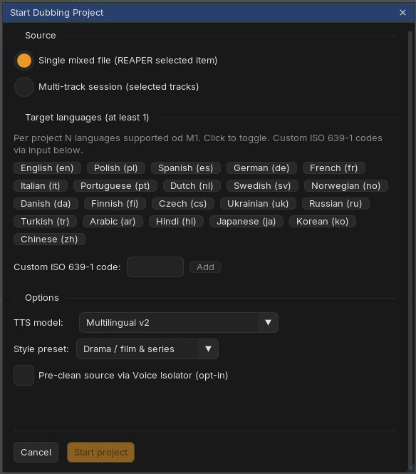
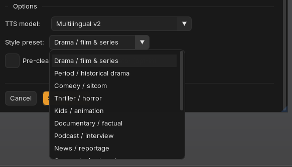
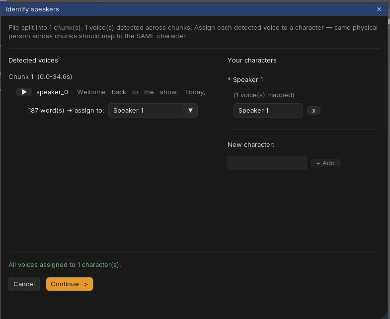
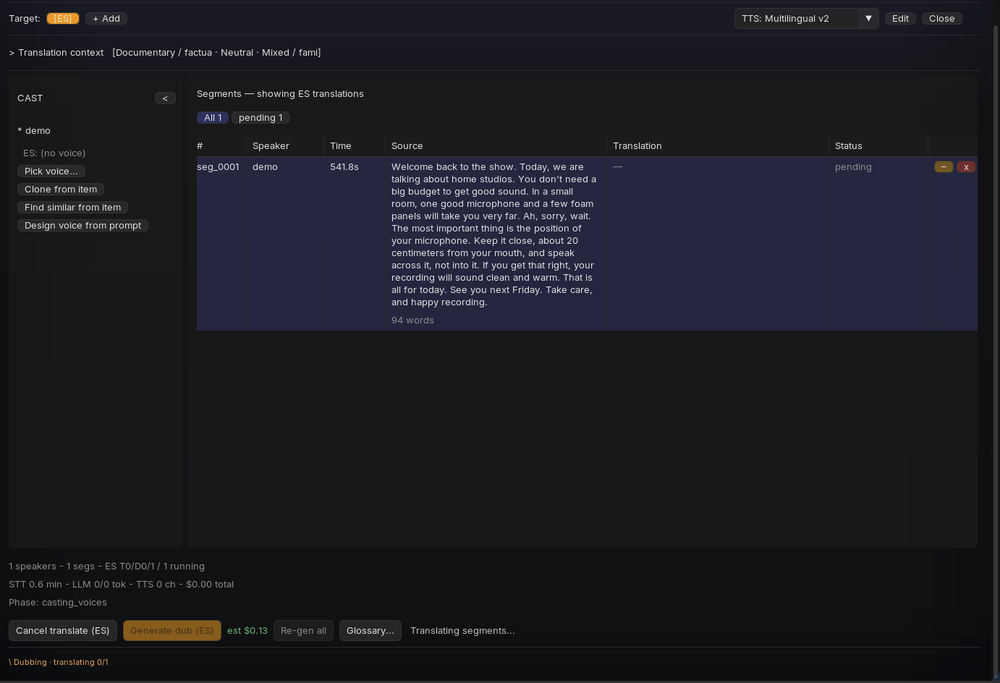
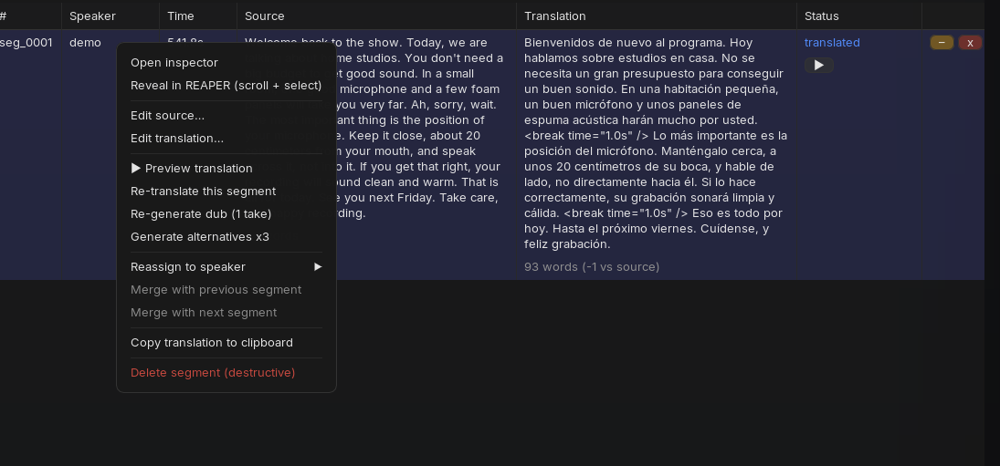
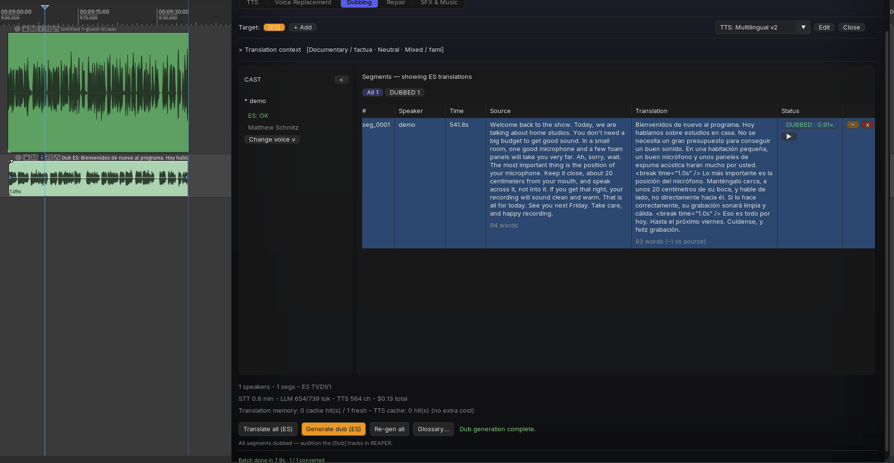

OverviewHow a dub comes together
A dubbing project moves through clear phases. You are in control at each gate:
- Transcribe - speech-to-text with word timing and speaker detection (files over 8 minutes are split at silences automatically).
- Identify speakers - you confirm who is who; detected voices become named characters.
- Cast voices - assign a target-language voice to each character (library pick, clone, similar-search or design-from-prompt).
- Translate - segments go through your LLM with your context, style and glossary.
- Generate dub - each segment is rendered and spliced onto its speaker's dub track, stretched intelligently to fit the original timing.
The status line at the bottom of the panel always shows the current phase, per-language progress counters and a live cost ticker.
Step 1Start the project

- Source - either a single mixed file (the item selected in REAPER; speakers are detected automatically) or a multi-track session (each selected track is one speaker; no length limit and no detection needed).
- Target languages - toggle any number of language chips, or add a custom ISO 639-1 code. More languages can be added later with + Add.
- Style preset - tells the translator what kind of material this is. Thirteen presets ship with Reasonate (drama, documentary, podcast, comedy, kids, corporate...), and you can save your own; the preset prefills the translation context, which you can edit at any time.
- Voice Isolator - optional pre-clean of the source before transcription.

Step 2Identify speakers
After transcription, Reasonate shows every voice it detected, with a play button and a text sample per chunk. Your job: map each detected voice to a character. For a single-chunk file this is mostly pre-filled; for long, chunked material you make sure that "speaker_0 in chunk 1" and "speaker_2 in chunk 3" both point to the same person.

Step 3Cast the voices
The CAST sidebar lists your characters. Each needs a voice for each target language. Four ways to get one:
- Pick voice... - choose from your ElevenLabs library.
- Clone from item - train an instant voice clone from the speaker's own audio (select their clean section in REAPER first). The dub then keeps the original person's timbre.
- Find similar from item - let ElevenLabs suggest library voices that sound like the original speaker.
- Design voice from prompt - describe a voice ("warm female narrator, 40s, slight rasp") and pick from generated previews.
Characters and their voices sync automatically to the project's Cast Registry. If the registry already knows a character (say, from Repair), a Match cast (N) button appears with suggestions - you review them in a modal and apply only what you check. And when you add another target language, the new language quietly inherits the cast you already built.
Step 4Context, style and glossary
The collapsible Translation context section above the table is your director's brief to the translator: tone, era, audience, medium and formality dropdowns, plus a free-text field for anything else ("keep the jokes; audience is teenagers; brand names stay English").
Glossary... holds three lists that keep long projects consistent: characters (names and descriptions), terms (translate X as Y), and do-not-translate (product names, catchphrases).
Editing context or glossary marks affected translations as stale - you will see exactly what needs a re-run, and nothing re-translates behind your back.
Translation runs on your own key: Anthropic, OpenAI, Gemini, DeepSeek, Grok or Mistral (configure in Settings → AI). Costs are token-based and shown live in the ticker. Anthropic users can enable prompt caching for large projects - repeat context comes at a fraction of the price.
Step 5Translate, review, generate

Translate all processes every pending segment (three at a time, with automatic retry on rate limits). Then read - the table shows source and translation side by side. Edit anything: double-click a cell to edit text in place, or open the full Inspector for a segment (double-click the row) to edit source, translation and a per-segment director's note.

Before committing to a full dub you can ▶ Preview translation on any segment - it renders that segment's read so you can hear the voice speak the translation. The render is cached, so if you like it, generating the dub reuses it at no extra cost.
Generate dub renders all translated segments and splices them onto [Dub LANG: speaker] tracks under your source. Segment status pills flip to DUBBED as they land.

The hard part, solvedTiming and tempo
Translations rarely have the same length as the original. Reasonate handles this on two levels:
- While translating - the LLM gets a timing budget per segment and is asked to write translations that fit, using natural pause marks where the original breathes.
- While splicing - each rendered segment is fitted to the original slot with a smart ladder: use the natural pace when it fits, borrow silence after the segment when available, and only then time-stretch, gently and within limits. Speech stretching uses REAPER's elastique "Soloist: Speech" mode automatically.
The result is shown honestly: the DUBBED - 1.08x pill tells you the applied ratio, and warnings appear if a segment had to overrun or leave a gap. Click the pill for a tempo slider (0.74x to 1.35x) and adjust a segment by ear; the item refits in place, undoable as a single action. Too tight to fix with tempo? Use Expand/Shorten translation and re-render that one segment.
IteratingStaying in control on long projects
- Stale tracking - change a source text, a translation, a voice or the context, and everything affected downstream is marked stale (with a distinct color on the timeline items too). Re-run just the stale parts.
- Per-segment tools - re-translate, re-generate one take, or Generate alternatives x3 and pick the best take in REAPER (Tab cycles).
- Filters - status chips above the table (pending / translated / stale / DUBBED / failed) plus one-click selection of everything that needs attention.
- Reveal in REAPER - the table and the timeline stay in sync: click a segment to select its item, click an item to highlight its row; the playhead highlights the segment it is passing through.
- Failures are terminal, not silent - a failed segment shows a red chip with the reason and a Retry button. No payment loops.